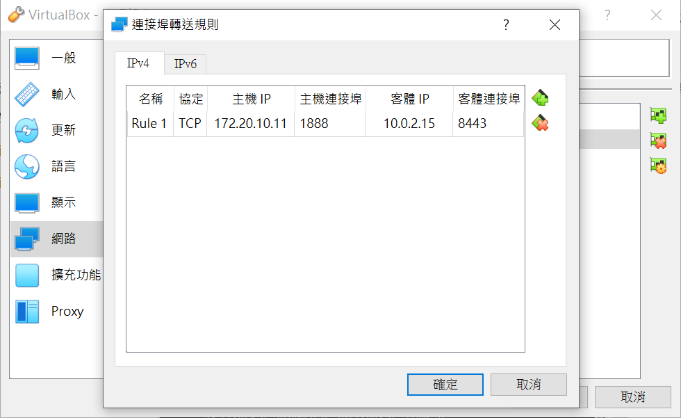

w12.13 <<
Previous Next >> w15
w14
虛擬主機網路和近端連線配(ipv4)
先進入etc的netplan
cd /etc/netplan
然後設置00-installer-config.yaml資料夾的文字檔(sudo vi是編輯文字檔)
sudo vi 00-installer-config.yaml
設置(i)如下圖:

接著esc再按:wq儲存
然後就可以下載ifconfig 缺少的net-tools的模組
sudo apt install net-tools
接著就可以執行ifconfig來查詢虛擬主機的IP(guest IP)，因為我們目前使用的是IPV4所以只需要查IPV4的就好如圖(10.0.2.15):

接著就可以去(檔案>喜好設定>網路)新增或設置虛擬主機的guest和host IP如圖:

guest IP就是我們剛剛查到的(10.0.2.15)，而客體連接阜是我們要連的近端8443。host IP則用電腦的小黑窗(cmd)，到c槽使用ipconfig尋找手機連線wifi的ipv4如下圖，最後的主體連接阜則是我們給它的名字:

然後進入Ubuntu的設定把網路設定成和配置的相同和允許所有人使用，如下圖:
接著配置完網路則到home/kmol2020/tmp/cd2020pj1做wsgi.py的配置。首先wsgi.py會需要一個叫做oauth_gm.-txt的文件檔(設置在tmp裡)，所以你需配置給它而內容可以是簡單的123如圖:
接著在cd2020pj1對wsgi.py做更改為guest IP(要讓虛擬主機能連上近端就必須使用虛擬主機的IP)操作如下圖:
sudo vi wsgi.py

然後就可以輸入python3 wsgi.py的指令連上近端如下圖:

接著到google打host ID(http://.....)和阜號連上近端就完成了如下圖:

以下是示範影片:
w12.13 <<
Previous Next >> w15